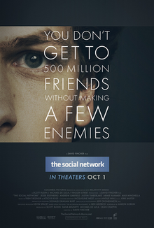

Best 21st Century Movies
Top 10 Only:
The Irishman (2019)

In-depth Analysis:
The Irishman (also known as I Heard You Paint Houses) is a 2019 American epic gangster film directed and produced by Martin Scorsese from a screenplay by Steven Zaillian, based on the 2004 book I Heard You Paint Houses by Charles Brandt.[4] It stars Robert De Niro, Al Pacino, and Joe Pesci, with Ray Romano, Bobby Cannavale, Anna Paquin, Stephen Graham, Stephanie Kurtzuba, Jesse Plemons, and Harvey Keitel in supporting roles. The film follows Frank Sheeran (De Niro), a truck driver who becomes a hitman involved with mobster Russell Bufalino (Pesci) and his crime family before later working for the powerful Teamster Jimmy Hoffa (Pacino). The film marked the ninth collaboration between Scorsese and De Niro, in addition to Scorsese's fifth collaboration with Harvey Keitel, his fourth collaboration with Joe Pesci; his first with Al Pacino; the fourth collaboration between Pacino and De Niro; and the first collaboration between Pacino and Pesci altogether.
In September 2014, following years of "development hell", The Irishman was announced as Scorsese's next film after Silence (2016). De Niro, who also served as producer, and Pacino were confirmed that month, as was Pesci, who came out of his unofficial retirement to star after numerous requests. Principal photography began in September 2017 in New York City and the Mineola and Williston Park sections of Long Island and wrapped in March 2018. Scenes were filmed with a custom three-camera rig to help facilitate the extensive de-ageing digital effects that made De Niro, Pacino, and Pesci appear younger. With a runtime of 209 minutes, it is the longest film of Scorsese's career.
The Irishman premiered at the 57th New York Film Festival, and had a limited theatrical release on November 1, 2019, followed by a streaming release on November 27, 2019, by Netflix. The film received widespread critical acclaim, with praise for Scorsese's direction, the production and costume design, editing, screenplay, cinematography, the use of de-aging effects, and the performances of De Niro, Pacino and Pesci. It was named the Best Film of 2019 by the National Board of Review and one of the top ten films of the year by American Film Institute. The film was nominated for ten categories at the 92nd Academy Awards, including Best Picture, and received numerous other accolades.
Cast
- Robert De Niro as Frank Sheeran
- Al Pacino as Jimmy Hoffa
- Joe Pesci as Russell Bufalino
- Ray Romano as Bill Bufalino
- Bobby Cannavale as Skinny Razor
- Anna Paquin as Peggy Sheeran
- Lucy Gallina as Young Peggy Sheeran
- Stephen Graham as Anthony "Tony Pro" Provenzano
- Harvey Keitel as Angelo Bruno
- Stephanie Kurtzuba as Irene Sheeran
- Kathrine Narducci as Carrie Bufalino
- Welker White as Josephine "Jo" Hoffa
- Jesse Plemons as Chuckie O'Brien
- Jack Huston as Robert F. Kennedy
- Domenick Lombardozzi as Fat Tony Salerno
- Paul Herman as Whispers DiTullio
- Louis Cancelmi as Sally Bugs
- Rebecca Faulkenberry as Barbara Hoffa
- Gary Basaraba as Frank "Fitz" Fitzsimmons
- Marin Ireland as Dolores Sheeran
- India Ennenga as Young Dolores
- Sebastian Maniscalco as "Crazy" Joe Gallo
- Steven Van Zandt as Jerry Vale
- Jennifer Mudge as Maryanne Sheeran
- Tess Price as Young Maryanne
- Tony Suriano as Silver Shop's Owner Son
Trailer
Read More...
Go to MoviesThe Shape of Water (2017)

In-depth Analysis:
The Shape of Water is a 2017 period romantic fantasy film directed and produced by Guillermo del Toro, who co-wrote the screenplay with Vanessa Taylor. It stars Sally Hawkins, Michael Shannon, Richard Jenkins, Doug Jones, Michael Stuhlbarg, and Octavia Spencer. Set in 1962 Baltimore, Maryland, the film follows a mute cleaner at a high-security government laboratory who falls in love with a captured humanoid amphibian creature and decides to help him escape from death at the hands of an evil colonel. Filming took place on location in Ontario, Canada, from August to November 2016.
The Shape Of Water was screened as part of the main competition in the 74th Venice International Film Festival, where it premiered on August 31, 2017, and was awarded the Golden Lion. It was also screened at the 2017 Toronto International Film Festival. It began a limited release in two theaters in New York City on December 1, 2017, before expanding wide on December 22, and grossed $195 million worldwide.
The Shape of Water was widely acclaimed by critics, who lauded its acting, screenplay, direction, visuals, production design, cinematography, and musical score. The American Film Institute selected it as one of the top ten films of 2017. The film was nominated for a leading thirteen awards at the 90th Academy Awards, winning four, including Best Picture and Best Director, and received numerous other accolades; it was the second fantasy film to win Best Picture, after The Lord of the Rings: The Return of the King (2003). A novelization by del Toro and Daniel Kraus was published on March 6, 2018.
Cast
- Sally Hawkins as Elisa Esposito
- Michael Shannon as Richard Strickland
- Richard Jenkins as Giles
- Doug Jones as "The Amphibian Man"
- Michael Stuhlbarg as Robert Hoffstetler / Dimitri Mosenkov
- Octavia Spencer as Zelda Delilah Fuller
- Nick Searcy as General of the Air Force Frank Hoyt
- David Hewlett as Fleming
- Nigel Bennett as Mihalkov
- Stewart Arnott as Bernard
- Lauren Lee Smith as Elaine Strickland
- Martin Roach as Brewster Fuller
- John Kapelos as Mr. Arzoumanian
- Morgan Kelly as Pie Guy
- Wendy Lyon as Sally
Trailer
Read More...
Go to MoviesThe Perks of Being a Wallflower (2012)

In-depth Analysis:
The Perks of Being a Wallflower is a 2012 American coming-of-age romantic drama film written and directed by Stephen Chbosky, and based on his 1999 novel. Logan Lerman stars as a teenager named Charlie who writes to an unnamed friend, and these epistles chronicle his trials, tribulations, and triumphs as he goes through his freshman year of high school. The film depicts his struggles with his, unbeknownst to him, post-traumatic stress disorder, as he goes through his journey in high school making new friends, portrayed by Emma Watson and Ezra Miller. The film's ensemble cast also includes Mae Whitman, Kate Walsh, Dylan McDermott, Joan Cusack, Nina Dobrev, and Paul Rudd in supporting roles.
Chbosky had always intended to adapt the novel to film, but did not rush to do so. He was hesitant to sell the rights to the film to anyone, but eventually sold them to Mr. Mudd Productions as long as they let him write and direct the film. Filming began in Pittsburgh, Pennsylvania, in May 2011 and lasted approximately fifty days.
The Perks of Being a Wallflower had its world premiere at the 2012 Toronto International Film Festival on September 8, 2012, to a standing ovation. It was released theatrically in the United States on September 21, 2012, by Summit Entertainment. The film was well received by critics, who praised Chbosky's screenplay and direction, the performances of Lerman, Watson and Miller, soundtrack, execution of its topics, and emotional weight. It was also a box office success, grossing $33.3 million on a budget of $13 million, and received several accolades, including the Independent Spirit Award for Best First Feature, two Critics' Choice Movie Awards nominations, and the GLAAD Media Award for Outstanding Film – Wide Release. The film has since become a cult classic,[8] especially among Zillennials, and helped define the "Tumblr era" in the early 2010s.
Cast
- Logan Lerman as Charlie Kelmeckis
- Emma Watson as Samantha "Sam" Button
- Ezra Miller as Patrick Stewart
- Mae Whitman as Mary Elizabeth
- Paul Rudd as Mr. Anderson, Charlie's English teacher
- Nina Dobrev as Candace Kelmeckis, Charlie's sister
- Johnny Simmons as Brad Hayes
- Erin Wilhelmi as Alice
- Adam Hagenbuch as Bob
- Kate Walsh as Mrs. Kelmeckis
- Dylan McDermott as Mr. Kelmeckis
- Melanie Lynskey as Helen, Charlie's aunt
- Joan Cusack as Dr. Burton
- Zane Holtz as Chris Kelmeckis, Charlie's older brother
- Reece Thompson as Craig, Sam's boyfriend
- Nicholas Braun as Ponytail Derek, Candace's boyfriend
- Landon Pigg as Peter
- Tom Savini as Mr. Callahan
- Julia Garner as Susan
Trailer
Read More...
Go to MoviesThe Secret Life of Walter Mitty (2013)

In-depth Analysis:
The Secret Life of Walter Mitty is a 2013 American adventure comedy-drama film directed, co-produced by and starring Ben Stiller and written by Steve Conrad. The film also stars Kristen Wiig, Shirley MacLaine, Adam Scott, Kathryn Hahn, and Sean Penn.[7][8] The second film adaptation of James Thurber's 1939 short story of the same name,[9] it follows a maladaptive daydreamer named Walter Mitty on his quest to find a missing negative print and its elusive photojournalist for Life magazine's final print issue.
Following a tumultuous production hell that spanned multiple studios, directors and leading actors dating back to 1994, it finally found traction in 2011 with Stiller as director and star of the film under 20th Century Fox and Samuel Goldwyn Films. The film premiered at the New York Film Festival on October 5, 2013,[10] and was theatrically released on December 25, 2013, in North America to generally mixed reception, with high praise for Stiller's direction, cinematography, and its soundtrack featuring José González. It was chosen by the National Board of Review as one of the top ten films of 2013.
Cast
- Ben Stiller as Walter Mitty, a negative asset manager at Life
- Kristen Wiig as Cheryl Melhoff, Walter's love interest and co-worker
- Shirley MacLaine as Edna Mitty, Walter's mother
- Adam Scott as Ted Hendricks, Managing Director of the 'Transition' to Life Online
- Kathryn Hahn as Odessa Mitty, Walter's sister
- Patton Oswalt as Todd Maher, an eHarmony customer service representative
- Adrian Martinez as Hernando, Walter's understudy and co-worker
- Ólafur Darri Ólafsson as a drunken Greenlandic helicopter pilot
- Sean Penn as Sean O'Connell, a photojournalist
- Jon Daly as Tim Naughton, one of Walter's co-workers
- Terence Bernie Hines as Gary Mannheim, one of Walter's co-workers
- Marcus Antturi as Rich Melhoff, Cheryl's son
- Kai Lennox as Phil Melhoff, Cheryl's ex-husband
- Conan O'Brien as himself
- Andy Richter as himself
- Joey Slotnick as a retirement home administrator
- Radio Man as himself, a Newsstand operator
Trailer
Read More...
Go to MoviesThe Social Network (2010)
In-depth Analysis:
The Social Network is a 2010 American biographical drama film directed by David Fincher and written by Aaron Sorkin, based on the 2009 book The Accidental Billionaires by Ben Mezrich. It portrays the founding of social networking website Facebook. It stars Jesse Eisenberg as Facebook founder Mark Zuckerberg, with Andrew Garfield as Eduardo Saverin, Justin Timberlake as Sean Parker, Armie Hammer as Cameron and Tyler Winklevoss, and Max Minghella as Divya Narendra. Neither Zuckerberg nor any other Facebook staff were involved with the project, although Saverin was a consultant for Mezrich's book.
Production began when Sorkin signed to write it. Principal photography began that same year in October in Cambridge, Massachusetts, and lasted until November. Additional scenes were shot in California, in the cities of Los Angeles and Pasadena. Trent Reznor and Atticus Ross of Nine Inch Nails composed the film's award-winning score, which was released on September 28, 2010.
The film premiered at the New York Film Festival on September 24, 2010, and was released theatrically in the United States on October 1, by Sony Pictures Releasing. A major critical and commercial success, the film grossed $224 million on a $40 million budget and was widely acclaimed by critics. It was named one of the best films of the year by 78 critics, and named the best by 22 critics, the most of any film that year. It was also chosen by the National Board of Review as the best film of 2010. At the 83rd Academy Awards, it received eight nominations, including for Best Picture, Best Director, and Best Actor for Eisenberg, and won for Best Adapted Screenplay, Best Original Score, and Best Film Editing. It also received awards for Best Motion Picture – Drama, Best Director, Best Screenplay, and Best Original Score at the 68th Golden Globe Awards.
Cast
- Jesse Eisenberg as Mark Zuckerberg[13]
- Andrew Garfield as Eduardo Saverin[14]
- Justin Timberlake as Sean Parker[15]
- Armie Hammer as Cameron and Tyler Winklevoss[16]
- Max Minghella as Divya Narendra[16]
- Brenda Song as Christy Lee[16]
- Rashida Jones as Marylin Delpy[17][18]
- John Getz as Sy[19]
- David Selby as Gage[19]
- Denise Grayson as Gretchen[19]
- Douglas Urbanski as Larry Summers[19]
- Rooney Mara as Erica Albright[16]
- Joseph Mazzello as Dustin Moskovitz[16]
- Dustin Fitzsimons as The Phoenix – S K Club President[20]
- Wallace Langham as Peter Thiel[21]
- Patrick Mapel as Chris Hughes[16]
- Dakota Johnson as Amelia Ritter[16]
- Malese Jow as Alice Cantwel[22]
- Trevor Wright as B.U. Guy in Bra[19]
- Shelby Young as K.C.[23]
- Aaron Sorkin as Ad Executive[19]
- Steve Sires as Bill Gates[24]
- Caleb Landry Jones as a fraternity brother
Trailer
Read More...
Go to MoviesThe Dark Knight (2008)
.jpg)
In-depth Analysis:
The Dark Knight is a 2008 superhero film directed by Christopher Nolan, from a screenplay co-written with his brother Jonathan. Based on the DC Comics superhero Batman, it is the sequel to Batman Begins (2005), and the second installment in The Dark Knight trilogy. The plot follows the vigilante Batman, police lieutenant James Gordon, and district attorney Harvey Dent, who form an alliance to dismantle organized crime in Gotham City. Their efforts are derailed by the Joker, an anarchistic mastermind who seeks to test how far Batman will go to save the city from chaos. The ensemble cast includes Christian Bale, Michael Caine, Heath Ledger, Gary Oldman, Aaron Eckhart, Maggie Gyllenhaal, and Morgan Freeman.
Warner Bros. Pictures prioritized a sequel following the successful reinvention of the Batman film series with Batman Begins. Christopher and Batman Begins co-writer David S. Goyer developed the story elements, making Dent the central protagonist caught up in the battle between Batman and the Joker. In writing the screenplay, the Nolans were influenced by 1980s Batman comics and crime drama films, and sought to continue Batman Begins' heightened sense of realism. From April to November 2007, filming took place with a $185 million budget in Chicago and Hong Kong, and on sets in England. The Dark Knight was the first major motion picture to be filmed with high-resolution IMAX cameras. Christopher avoided using computer-generated imagery unless necessary, insisting on practical stunts such as flipping an 18-wheel truck and blowing up a factory.
The Dark Knight was marketed with an innovative interactive viral campaign that initially focused on countering criticism of Ledger's casting by those who believed he was a poor choice to portray the Joker. Ledger died from an accidental prescription drug overdose in January 2008, leading to widespread interest from the press and public regarding his performance. When it was released in July, The Dark Knight received acclaim for its mature tone and themes, visual style, and performances—particularly that of Ledger, who received many posthumous awards including Academy, BAFTA, and Golden Globe awards for Best Supporting Actor, making The Dark Knight the first comic-book film to receive major industry awards. It broke several box-office records and became the highest-grossing 2008 film, the fourth-highest-grossing film to that time, and the highest-grossing superhero film.
Cast
- Christian Bale as Bruce Wayne / Batman
- Michael Caine as Alfred Pennyworth
- Heath Ledger as the Joker
- Gary Oldman as James Gordon
- Aaron Eckhart as Harvey Dent / Two-Face
- Maggie Gyllenhaal as Rachel Dawes
- Morgan Freeman as Lucius Fox
Trailer
Read More...
Go to MoviesThe Godfather (1972)

In-depth Analysis:
The Godfather is a 1972 American epic gangster film[2] directed by Francis Ford Coppola, who co-wrote the screenplay with Mario Puzo, based on Puzo's best-selling 1969 novel. The film stars an ensemble cast including Marlon Brando, Al Pacino, James Caan, Richard Castellano, Robert Duvall, Sterling Hayden, John Marley, Richard Conte and Diane Keaton. It is the first installment in The Godfather trilogy, chronicling the Corleone family under patriarch Vito Corleone (Brando) from 1945 to 1955. It focuses on the transformation of his youngest son, Michael Corleone (Pacino), from reluctant family outsider to ruthless mafia boss.
Paramount Pictures obtained the rights to the novel for $80,000, before it gained popularity.[3][4] Studio executives had trouble finding a director; the first few candidates turned down the position before Coppola signed on to direct the film but disagreement followed over casting several characters, in particular Vito (Brando) and Michael (Pacino). Filming took place primarily in locations around New York City and Sicily, and it was completed ahead of schedule. The score was composed principally by Nino Rota, with additional pieces by Carmine Coppola.
The Godfather premiered at the Loew's State Theatre on March 14, 1972, and was widely released in the United States on March 24, 1972. It was the highest-grossing film of 1972, and was for a time the highest-grossing film ever made, earning between $250 and $291 million at the box office. The film was acclaimed by critics and audiences, who praised its performances—particularly those of Brando and Pacino—direction, screenplay, story, cinematography, editing, score and portrayal of the mafia. The Godfather launched the successful careers of Coppola, Pacino and other relative newcomers in the cast and crew. At the 45th Academy Awards, the film won Best Picture, Best Actor (Brando) and Best Adapted Screenplay (for Puzo and Coppola). In addition, the seven other Oscar nominations included Pacino, Caan and Duvall, all for Best Supporting Actor, and Coppola for Best Director.
Cast
- Marlon Brando as Vito Corleone
- Al Pacino as Michael Corleone
- James Caan as Sonny Corleone
- Richard Castellano as Peter Clemenza
- Robert Duvall as Tom Hagen
- Sterling Hayden as Captain McCluskey
- John Marley as Jack Woltz
- Richard Conte as Emilio Barzini
- Al Lettieri as Virgil Sollozzo
- Diane Keaton as Kay Adams-Corleone
- Abe Vigoda as Salvatore Tessio
- Talia Shire as Connie Corleone
- Gianni Russo as Carlo Rizzi
- John Cazale as Fredo Corleone
- Rudy Bond as Cuneo
- Al Martino as Johnny Fontane
- Morgana King as Carmela Corleone
- Lenny Montana as Luca Brasi
- Johnny Martino as Paulie Gatto
- Salvatore Corsitto as Amerigo Bonasera
- Richard Bright as Al Neri
- Alex Rocco as Moe Greene
- Tony Giorgio as Bruno Tattaglia
- Vito Scotti as Nazorine
- Tere Livrano as Theresa Hagen
- Victor Rendina as Philip Tattaglia
- Jeannie Linero as Lucy Mancini
- Julie Gregg as Sandra Corleone
- Ardell Sheridan as Mrs. Clemenza
Trailer
Read More...
Go to MoviesPulp Fiction (1994)
.jpg)
In-depth Analysis:
Pulp Fiction is a 1994 American independent crime film written and directed by Quentin Tarantino from a story he conceived with Roger Avary.[3] It tells four intertwining tales of crime and violence in Los Angeles, California. The film stars John Travolta, Samuel L. Jackson, Bruce Willis, Tim Roth, Ving Rhames, and Uma Thurman. The title refers to the pulp magazines and hardboiled crime novels popular during the mid-20th century, known for their graphic violence and punchy dialogue.
Tarantino wrote Pulp Fiction in 1992 and 1993, incorporating scenes that Avary originally wrote for True Romance (1993). Its plot occurs out of chronological order. The film is also self-referential from its opening moments, beginning with a title card that gives two dictionary definitions of "pulp". Considerable screen time is devoted to monologues and casual conversations with eclectic dialogue revealing each character's perspectives on several subjects, and the film features an ironic combination of humor and strong violence. TriStar Pictures reportedly turned down the script as "too demented". Miramax Films co-chairman Harvey Weinstein was enthralled, however, and the film became the first that Miramax Films fully financed.
Pulp Fiction won the Palme d'Or at the 1994 Cannes Film Festival and was a major critical and commercial success. It was nominated for seven awards at the 67th Academy Awards, including Best Picture, and won Best Original Screenplay; Travolta, Jackson, and Thurman were nominated for Best Actor, Best Supporting Actor, and Best Supporting Actress respectively. As a result of the film's success, Travolta's career was reinvigorated. The film's development, marketing, distribution, and profitability had a sweeping effect on independent cinema.
Cast
- John Travolta as Vincent Vega
- Samuel L. Jackson as Jules Winnfield
- Uma Thurman as Mia Wallace
- Harvey Keitel as Winston Wolfe
- Tim Roth as Ringo/"Pumpkin"
- Amanda Plummer as Yolanda/"Honey Bunny"
- Maria de Medeiros as Fabienne
- Ving Rhames as Marsellus Wallace
- Eric Stoltz as Lance
- Rosanna Arquette as Jody
- Christopher Walken as Captain Koons
- Bruce Willis as Butch Coolidge
Trailer
Read More...
Go to MoviesForrest Gump (1994)

In-depth Analysis:
Forrest Gump is a 1994 American comedy-drama film directed by Robert Zemeckis. An adaptation of the 1986 novel by Winston Groom, the screenplay of the film is written by Eric Roth. It stars Tom Hanks in the title role, alongside Robin Wright, Gary Sinise, Mykelti Williamson, and Sally Field in lead roles. The film follows the life of an Alabama man named Forrest Gump (Hanks) and his experiences in the 20th-century United States.
Principal photography took place between August and December 1993, mainly in Georgia, North Carolina, and South Carolina. Extensive visual effects were used to incorporate Hanks into archived footage and to develop other scenes.
The soundtrack features songs reflecting the different periods seen in the film.
Forrest Gump was released in the United States on July 6, 1994, and received widespread critical acclaim for Zemeckis' direction, performances (particularly those of Hanks and Sinise), visual effects, music, and screenplay.
The film was a major success at the box office: it became the top-grossing film in the United States released that year and earned over US$678.2 million worldwide during its theatrical run, making it the second-highest-grossing film of 1994, behind The Lion King. The soundtrack sold over 12 million copies. Forrest Gump won six Academy Awards: Best Picture, Best Director, Best Actor for Hanks, Best Adapted Screenplay, Best Visual Effects, and Best Film Editing. It received many award nominations, including Golden Globes, British Academy Film Awards, and Screen Actors Guild Awards.
Cast
- Tom Hanks as Forrest Gump
- Michael Conner Humphreys as young Forrest Gump
- Robin Wright as Jenny Curran
- Hanna R. Hall as young Jenny Curran
- Gary Sinise as Lieutenant Dan Taylor
- Mykelti Williamson as Benjamin Buford "Bubba" Blue
- Sally Field as Mrs. Gump
- Haley Joel Osment as Forrest Gump Jr
- Peter Dobson as Elvis Presley
- Dick Cavett as himself
- Sam Anderson as Principal Hancock
- Geoffrey Blake as Wesley
- Siobhan Fallon Hogan as Dorothy Harris:
- Sonny Shroyer as Coach Paul "Bear" Bryant
- Grand L. Bush, Michael Jace, Conor Kennelly, and Teddy Lane Jr. as the Black Panthers
- Richard D'Alessandro as Abbie Hoffman
- Tiffany Salerno and Marla Sucharetza as "Cunning" Carla and "Long-Limbs" Lenore
Trailer
Read More...
Go to MoviesInception (2010)
_theatrical.jpg)
In-depth Analysis:
Inception is a 2010 science fiction action heist film[4][5][6][7] written and directed by Christopher Nolan, who also produced it with Emma Thomas, his wife. The film stars Leonardo DiCaprio as a professional thief who steals information by infiltrating the subconscious of his targets. He is offered a chance to have his criminal history erased as payment for the implantation of another person's idea into a target's subconscious.[8] The ensemble cast includes Ken Watanabe, Joseph Gordon-Levitt, Marion Cotillard, Elliot Page,[a] Tom Hardy, Cillian Murphy, Tom Berenger, Dileep Rao, and Michael Caine.
After the 2002 completion of Insomnia, Nolan presented to Warner Bros. a written 80-page treatment for a horror film envisioning "dream stealers," based on lucid dreaming.[9] Deciding he needed more experience before tackling a production of this magnitude and complexity, Nolan shelved the project and instead worked on 2005's Batman Begins, 2006's The Prestige, and 2008's The Dark Knight.[10] The treatment was revised over six months and was purchased by Warner in February 2009.[11] Inception was filmed in six countries, beginning in Tokyo on June 19 and ending in Canada on November 22.[12] Its official budget was $160 million, split between Warner Bros. and Legendary.[13] Nolan's reputation and success with The Dark Knight helped secure the film's US$100 million in advertising expenditure.
Inception's premiere was held in London on July 8, 2010; it was released in both conventional and IMAX theaters beginning on July 16, 2010.[14][15] Inception grossed over $837 million worldwide, becoming the fourth-highest-grossing film of 2010. Considered one of the best films of the 2010s,[16] Inception won four Oscars (Best Cinematography, Best Sound Editing, Best Sound Mixing, Best Visual Effects) and was nominated for four more (Best Picture, Best Original Screenplay, Best Art Direction, Best Original Score) at the 83rd Academy Awards.
Cast
- Leonardo DiCaprio as Dom Cobb
- Ken Watanabe as Saito
- Joseph Gordon-Levitt as Arthur
- Marion Cotillard as Mal
- Elliot Page as Ariadne
- Tom Hardy as Eames
- Cillian Murphy as Robert Fischer
- Tom Berenger as Peter Browning
- Michael Caine as Stephen Miles
- Dileep Rao as Yusuf
- Lukas Haas as Nash
- Talulah Riley as a woman, credited as "Blonde"
- Pete Postlethwaite as Maurice Fischer